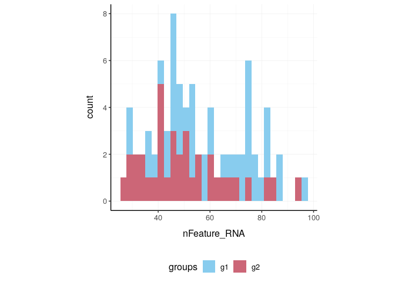
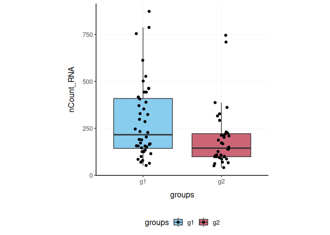
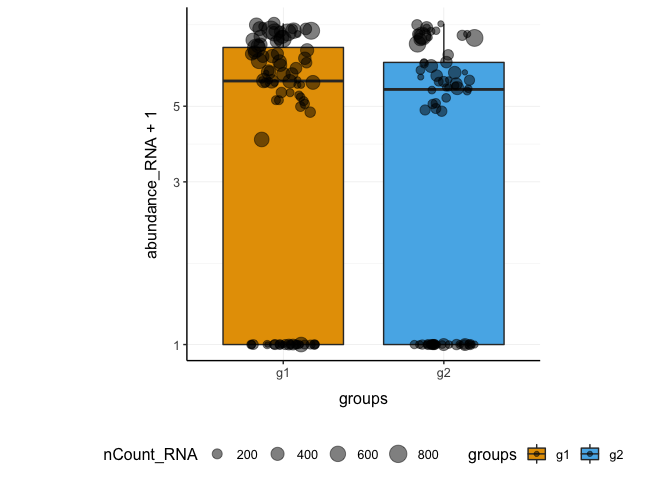
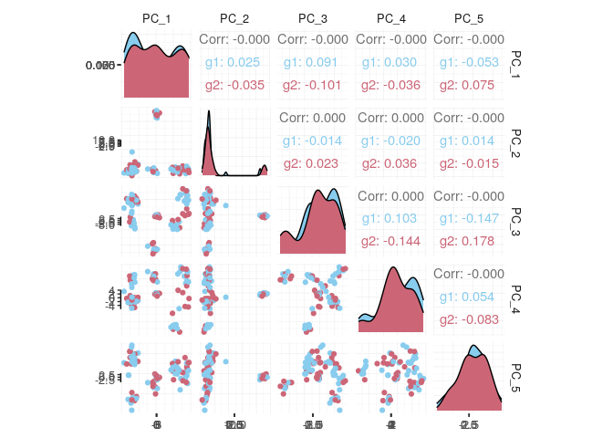
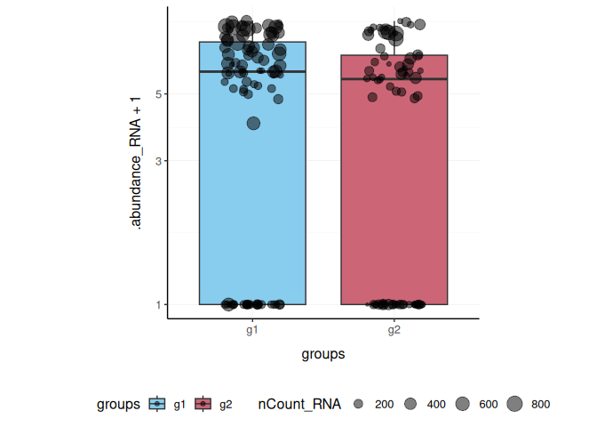
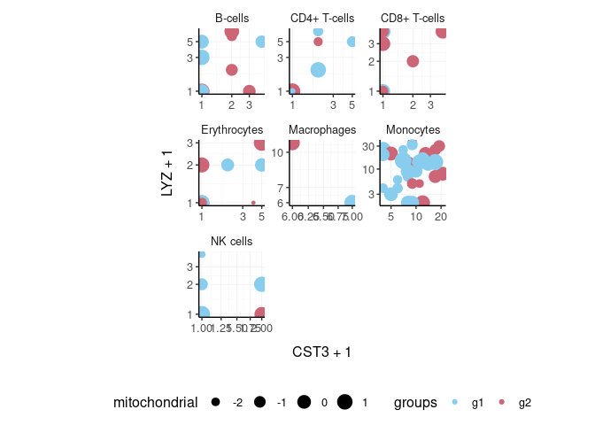
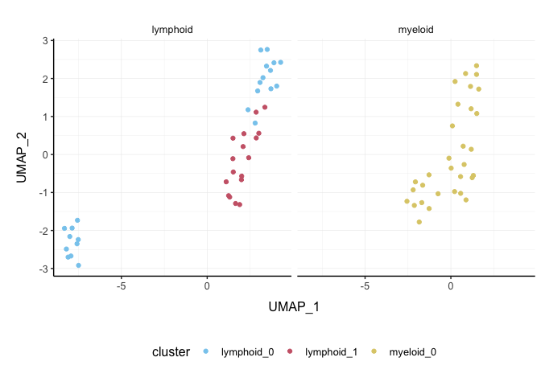

Brings Seurat to the tidyverse!
website: stemangiola.github.io/tidyseurat/
Please also have a look at
- tidybulk for tidy bulk RNA-seq analysis
- nanny for tidy high-level data analysis and manipulation
- tidygate for adding custom gate information to your tibble
- tidyHeatmap for heatmaps produced with tidy principles

Introduction
tidyseurat provides a bridge between the Seurat single-cell package
@butler2018integrating; @stuart2019comprehensive
and the tidyverse
@wickham2019welcome
. It creates an invisible layer that enables viewing the Seurat object as a tidyverse tibble, and provides Seurat-compatible dplyr, tidyr, ggplot and plotly functions.
Functions/utilities available
| Seurat-compatible Functions | Description |
|---|---|
all |
After all tidyseurat is a Seurat object, just better |
| tidyverse Packages | Description |
|---|---|
dplyr |
All dplyr APIs like for any tibble |
tidyr |
All tidyr APIs like for any tibble |
ggplot2 |
ggplot like for any tibble |
plotly |
plot_ly like for any tibble |
| Utilities | Description |
|---|---|
tidy |
Add tidyseurat invisible layer over a Seurat object |
as_tibble |
Convert cell-wise information to a tbl_df
|
join_transcripts |
Add transcript-wise information, returns a tbl_df
|
Create tidyseurat, the best of both worlds!
This is a seurat object but it is evaluated as tibble. So it is fully compatible both with Seurat and tidyverse APIs.
It looks like a tibble
pbmc_small_tidy
## # A tibble: 80 x 16
## cell orig.ident nCount_RNA nFeature_RNA RNA_snn_res.0.8 letter.idents groups
## <chr> <fct> <dbl> <int> <fct> <fct> <chr>
## 1 ATGC… SeuratPro… 70 47 0 A g2
## 2 CATG… SeuratPro… 85 52 0 A g1
## 3 GAAC… SeuratPro… 87 50 1 B g2
## 4 TGAC… SeuratPro… 127 56 0 A g2
## 5 AGTC… SeuratPro… 173 53 0 A g2
## 6 TCTG… SeuratPro… 70 48 0 A g1
## 7 TGGT… SeuratPro… 64 36 0 A g1
## 8 GCAG… SeuratPro… 72 45 0 A g1
## 9 GATA… SeuratPro… 52 36 0 A g1
## 10 AATG… SeuratPro… 100 41 0 A g1
## # … with 70 more rows, and 9 more variables: RNA_snn_res.1 <fct>, file <chr>,
## # PC_1 <dbl>, PC_2 <dbl>, PC_3 <dbl>, PC_4 <dbl>, PC_5 <dbl>, tSNE_1 <dbl>,
## # tSNE_2 <dbl>But it is a Seurat object after all
Annotation polishing
We may have a column that contains the directory each run was taken from, such as the “file” column in pbmc_small_tidy.
pbmc_small_tidy$file[1:5]
## ATGCCAGAACGACT
## "../data/sample2/outs/filtered_feature_bc_matrix/"
## CATGGCCTGTGCAT
## "../data/sample1/outs/filtered_feature_bc_matrix/"
## GAACCTGATGAACC
## "../data/sample2/outs/filtered_feature_bc_matrix/"
## TGACTGGATTCTCA
## "../data/sample2/outs/filtered_feature_bc_matrix/"
## AGTCAGACTGCACA
## "../data/sample2/outs/filtered_feature_bc_matrix/"We may want to extract the run/sample name out of it into a separate column. Tidyverse extract can be used to convert a character column into multiple columns using regular expression groups.
# Create sample column
pbmc_small_polished <-
pbmc_small_tidy %>%
extract(file, "sample", "../data/([a-z0-9]+)/outs.+", remove = FALSE)
# Reorder to have sample column up front
pbmc_small_polished %>%
select(sample, everything())
## # A tibble: 80 x 17
## cell sample orig.ident nCount_RNA nFeature_RNA RNA_snn_res.0.8 letter.idents
## <chr> <chr> <fct> <dbl> <int> <fct> <fct>
## 1 ATGC… sampl… SeuratPro… 70 47 0 A
## 2 CATG… sampl… SeuratPro… 85 52 0 A
## 3 GAAC… sampl… SeuratPro… 87 50 1 B
## 4 TGAC… sampl… SeuratPro… 127 56 0 A
## 5 AGTC… sampl… SeuratPro… 173 53 0 A
## 6 TCTG… sampl… SeuratPro… 70 48 0 A
## 7 TGGT… sampl… SeuratPro… 64 36 0 A
## 8 GCAG… sampl… SeuratPro… 72 45 0 A
## 9 GATA… sampl… SeuratPro… 52 36 0 A
## 10 AATG… sampl… SeuratPro… 100 41 0 A
## # … with 70 more rows, and 10 more variables: groups <chr>,
## # RNA_snn_res.1 <fct>, file <chr>, PC_1 <dbl>, PC_2 <dbl>, PC_3 <dbl>,
## # PC_4 <dbl>, PC_5 <dbl>, tSNE_1 <dbl>, tSNE_2 <dbl>Preliminary plots
Set colours and theme for plots.
# Use colourblind-friendly colours
friendly_cols <- c("#88CCEE", "#CC6677", "#DDCC77", "#117733", "#332288", "#AA4499", "#44AA99", "#999933", "#882255", "#661100", "#6699CC")
# Set theme
my_theme <-
list(
scale_fill_manual(values = friendly_cols),
scale_color_manual(values = friendly_cols),
theme_bw() +
theme(
panel.border = element_blank(),
axis.line = element_line(),
panel.grid.major = element_line(size = 0.2),
panel.grid.minor = element_line(size = 0.1),
text = element_text(size = 12),
legend.position = "bottom",
aspect.ratio = 1,
strip.background = element_blank(),
axis.title.x = element_text(margin = margin(t = 10, r = 10, b = 10, l = 10)),
axis.title.y = element_text(margin = margin(t = 10, r = 10, b = 10, l = 10))
)
)We can treat pbmc_small_polished effectively as a normal tibble for plotting.
Here we plot number of transcripts per cell.
pbmc_small_polished %>%
tidyseurat::ggplot(aes(nFeature_RNA, fill = groups)) +
geom_histogram() +
my_theme
Here we plot total transcripts per cell.
pbmc_small_polished %>%
tidyseurat::ggplot(aes(groups, nCount_RNA, fill = groups)) +
geom_boxplot(outlier.shape = NA) +
geom_jitter(width = 0.1) +
my_theme
Here we plot abundance of two transcripts for each group.
pbmc_small_polished %>%
join_transcripts(transcripts = c("HLA-DRA", "LYZ")) %>%
ggplot(aes(groups, abundance_RNA + 1, fill = groups)) +
geom_boxplot(outlier.shape = NA) +
geom_jitter(aes(size = nCount_RNA), alpha = 0.5, width = 0.2) +
scale_y_log10() +
my_theme
Preprocess the dataset
Also you can treat the object as Seurat object and proceed with data processing.
pbmc_small_pca <-
pbmc_small_polished %>%
SCTransform(verbose = FALSE) %>%
FindVariableFeatures(verbose = FALSE) %>%
RunPCA(verbose = FALSE)
pbmc_small_pca
## # A tibble: 80 x 19
## cell orig.ident nCount_RNA nFeature_RNA RNA_snn_res.0.8 letter.idents groups
## <chr> <fct> <dbl> <int> <fct> <fct> <chr>
## 1 ATGC… SeuratPro… 70 47 0 A g2
## 2 CATG… SeuratPro… 85 52 0 A g1
## 3 GAAC… SeuratPro… 87 50 1 B g2
## 4 TGAC… SeuratPro… 127 56 0 A g2
## 5 AGTC… SeuratPro… 173 53 0 A g2
## 6 TCTG… SeuratPro… 70 48 0 A g1
## 7 TGGT… SeuratPro… 64 36 0 A g1
## 8 GCAG… SeuratPro… 72 45 0 A g1
## 9 GATA… SeuratPro… 52 36 0 A g1
## 10 AATG… SeuratPro… 100 41 0 A g1
## # … with 70 more rows, and 12 more variables: RNA_snn_res.1 <fct>, file <chr>,
## # sample <chr>, nCount_SCT <dbl>, nFeature_SCT <int>, PC_1 <dbl>, PC_2 <dbl>,
## # PC_3 <dbl>, PC_4 <dbl>, PC_5 <dbl>, tSNE_1 <dbl>, tSNE_2 <dbl>If a tool is not included in the tidyseurat collection, we can use as_tibble to permanently convert tidyseurat into tibble.
pbmc_small_pca %>%
as_tibble() %>%
select(contains("PC"), everything()) %>%
GGally::ggpairs(columns = 1:5, ggplot2::aes(colour = groups)) +
my_theme
Identify clusters
We proceed with cluster identification with Seurat.
pbmc_small_cluster <-
pbmc_small_pca %>%
FindNeighbors(verbose = FALSE) %>%
FindClusters(method = "igraph", verbose = FALSE)
pbmc_small_cluster
## # A tibble: 80 x 21
## cell orig.ident nCount_RNA nFeature_RNA RNA_snn_res.0.8 letter.idents groups
## <chr> <fct> <dbl> <int> <fct> <fct> <chr>
## 1 ATGC… SeuratPro… 70 47 0 A g2
## 2 CATG… SeuratPro… 85 52 0 A g1
## 3 GAAC… SeuratPro… 87 50 1 B g2
## 4 TGAC… SeuratPro… 127 56 0 A g2
## 5 AGTC… SeuratPro… 173 53 0 A g2
## 6 TCTG… SeuratPro… 70 48 0 A g1
## 7 TGGT… SeuratPro… 64 36 0 A g1
## 8 GCAG… SeuratPro… 72 45 0 A g1
## 9 GATA… SeuratPro… 52 36 0 A g1
## 10 AATG… SeuratPro… 100 41 0 A g1
## # … with 70 more rows, and 14 more variables: RNA_snn_res.1 <fct>, file <chr>,
## # sample <chr>, nCount_SCT <dbl>, nFeature_SCT <int>, SCT_snn_res.0.8 <fct>,
## # seurat_clusters <fct>, PC_1 <dbl>, PC_2 <dbl>, PC_3 <dbl>, PC_4 <dbl>,
## # PC_5 <dbl>, tSNE_1 <dbl>, tSNE_2 <dbl>Now we can interrogate the object as if it was a regular tibble data frame.
pbmc_small_cluster %>%
tidyseurat::count(groups, seurat_clusters)
## # A tibble: 8 x 3
## groups seurat_clusters n
## <chr> <fct> <int>
## 1 g1 0 17
## 2 g1 1 14
## 3 g1 2 9
## 4 g1 3 4
## 5 g2 0 13
## 6 g2 1 12
## 7 g2 2 6
## 8 g2 3 5We can identify cluster markers using Seurat.
# Identify top 10 markers per cluster
markers <-
pbmc_small_cluster %>%
FindAllMarkers(only.pos = TRUE, min.pct = 0.25, thresh.use = 0.25) %>%
group_by(cluster) %>%
top_n(10, avg_logFC)
# Plot heatmap
pbmc_small_cluster %>%
DoHeatmap(
features = markers$gene,
group.colors = friendly_cols
)
Reduce dimensions
We can calculate the first 3 UMAP dimensions using the Seurat framework.
pbmc_small_UMAP <-
pbmc_small_cluster %>%
RunUMAP(reduction = "pca", dims = 1:15, n.components = 3L, )And we can plot them using 3D plot using plotly.
pbmc_small_UMAP %>%
plot_ly(
x = ~`UMAP_1`,
y = ~`UMAP_2`,
z = ~`UMAP_3`,
color = ~seurat_clusters,
colors = friendly_cols[1:4]
)
Cell type prediction
We can infer cell type identities using SingleR
@aran2019reference
and manipulate the output using tidyverse.
# Get cell type reference data
blueprint <- celldex::BlueprintEncodeData()
# Infer cell identities
cell_type_df <-
pbmc_small_UMAP@assays[["SCT"]]@counts %>%
log1p() %>%
Matrix::Matrix(sparse = TRUE) %>%
SingleR::SingleR(
ref = blueprint,
labels = blueprint$label.main,
method = "single"
) %>%
as.data.frame() %>%
as_tibble(rownames = "cell") %>%
select(cell, first.labels)
# Join UMAP and cell type info
pbmc_small_cell_type <-
pbmc_small_UMAP %>%
left_join(cell_type_df, by = "cell")
# Reorder columns
pbmc_small_cell_type %>%
tidyseurat::select(cell, first.labels, everything())
## # A tibble: 80 x 25
## cell first.labels orig.ident nCount_RNA nFeature_RNA RNA_snn_res.0.8
## <chr> <chr> <fct> <dbl> <int> <fct>
## 1 ATGC… CD4+ T-cells SeuratPro… 70 47 0
## 2 CATG… CD8+ T-cells SeuratPro… 85 52 0
## 3 GAAC… CD8+ T-cells SeuratPro… 87 50 1
## 4 TGAC… CD4+ T-cells SeuratPro… 127 56 0
## 5 AGTC… CD4+ T-cells SeuratPro… 173 53 0
## 6 TCTG… CD4+ T-cells SeuratPro… 70 48 0
## 7 TGGT… CD4+ T-cells SeuratPro… 64 36 0
## 8 GCAG… CD4+ T-cells SeuratPro… 72 45 0
## 9 GATA… CD4+ T-cells SeuratPro… 52 36 0
## 10 AATG… CD4+ T-cells SeuratPro… 100 41 0
## # … with 70 more rows, and 19 more variables: letter.idents <fct>,
## # groups <chr>, RNA_snn_res.1 <fct>, file <chr>, sample <chr>,
## # nCount_SCT <dbl>, nFeature_SCT <int>, SCT_snn_res.0.8 <fct>,
## # seurat_clusters <fct>, PC_1 <dbl>, PC_2 <dbl>, PC_3 <dbl>, PC_4 <dbl>,
## # PC_5 <dbl>, tSNE_1 <dbl>, tSNE_2 <dbl>, UMAP_1 <dbl>, UMAP_2 <dbl>,
## # UMAP_3 <dbl>We can easily summarise the results. For example, we can see how cell type classification overlaps with cluster classification.
pbmc_small_cell_type %>%
count(seurat_clusters, first.labels)
## # A tibble: 9 x 3
## seurat_clusters first.labels n
## <fct> <chr> <int>
## 1 0 CD4+ T-cells 8
## 2 0 CD8+ T-cells 10
## 3 0 NK cells 12
## 4 1 Macrophages 1
## 5 1 Monocytes 25
## 6 2 B-cells 10
## 7 2 Macrophages 1
## 8 2 Monocytes 4
## 9 3 Erythrocytes 9We can easily reshape the data for building information-rich faceted plots.
pbmc_small_cell_type %>%
# Reshape and add classifier column
pivot_longer(
cols = c(seurat_clusters, first.labels),
names_to = "classifier", values_to = "label"
) %>%
# UMAP plots for cell type and cluster
ggplot(aes(UMAP_1, UMAP_2, color = label)) +
geom_point() +
facet_wrap(~classifier) +
my_theme
We can easily plot gene correlation per cell category, adding multi-layer annotations.
pbmc_small_cell_type %>%
# Add some mitochondrial abundance values
mutate(mitochondrial = rnorm(n())) %>%
# Plot correlation
join_transcripts(transcripts = c("CST3", "LYZ"), shape = "wide") %>%
ggplot(aes(CST3 + 1, LYZ + 1, color = groups, size = mitochondrial)) +
geom_point() +
facet_wrap(~first.labels, scales = "free") +
scale_x_log10() +
scale_y_log10() +
my_theme
Nested analyses
A powerful tool we can use with tidyseurat is nest. We can easily perform independent analyses on subsets of the dataset. First we classify cell types in lymphoid and myeloid; then, nest based on the new classification
pbmc_small_nested <-
pbmc_small_cell_type %>%
filter(first.labels != "Erythrocytes") %>%
mutate(cell_class = if_else(`first.labels` %in% c("Macrophages", "Monocytes"), "myeloid", "lymphoid")) %>%
nest(data = -cell_class)
pbmc_small_nested
## # A tibble: 2 x 2
## cell_class data
## <chr> <list>
## 1 lymphoid <tidysert>
## 2 myeloid <tidysert>Now we can independently for the lymphoid and myeloid subsets (i) find variable features, (ii) reduce dimensions, and (iii) cluster using both tidyverse and SingleCellExperiment seamlessly.
pbmc_small_nested_reanalysed <-
pbmc_small_nested %>%
mutate(data = map(
data, ~ .x %>%
FindVariableFeatures(verbose = FALSE) %>%
RunPCA(npcs = 10, verbose = FALSE) %>%
FindNeighbors(verbose = FALSE) %>%
FindClusters(method = "igraph", verbose = FALSE) %>%
RunUMAP(reduction = "pca", dims = 1:10, n.components = 3L, verbose = FALSE)
))
pbmc_small_nested_reanalysed
## # A tibble: 2 x 2
## cell_class data
## <chr> <list>
## 1 lymphoid <tidysert>
## 2 myeloid <tidysert>Now we can unnest and plot the new classification.
pbmc_small_nested_reanalysed %>%
# Convert to tibble otherwise Seurat drops reduced dimensions when unifying data sets.
mutate(data = map(data, ~ .x %>% as_tibble())) %>%
unnest(data) %>%
# Define unique clusters
unite("cluster", c(cell_class, seurat_clusters), remove = FALSE) %>%
# Plotting
ggplot(aes(UMAP_1, UMAP_2, color = cluster)) +
geom_point() +
facet_wrap(~cell_class) +
my_theme